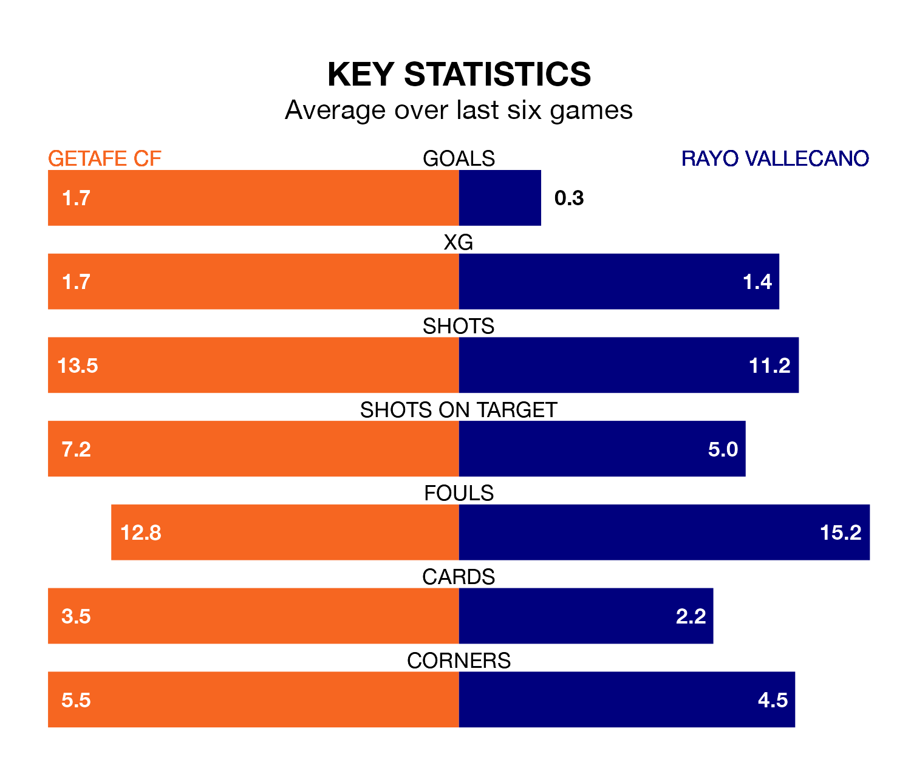

Rayo Vallecano come to Coliseum Alfonso Pérez to play Getafe CF on Tuesday in terrible form, having collected just two points from their last six games.
The visitors have drawn two and lost four of their last six fixtures, while Getafe CF have three wins and two draws.
In David Soria, Getafe can rely on one of the league's safest pair of hands. He has kept seven clean sheets in his 18 appearances this season, and no 'keeper has prevented the opposition scoring more often in La Liga.
In Rayo's net, Stole Dimitrievski also has seven clean sheets in 18 games. He has conceded a goal every 74 minutes, only slightly more often than the 77 minutes between goals for Soria Solís.
In the last 10 years, Getafe and Rayo have played each other on 16 occasions. Getafe won five of them, Rayo seven, and they drew four times.
On average, Getafe CF scored 0.8 goals and Rayo Vallecano 1.2 in those matches.
Their last meeting was on February 12, when they played out a 1-1 draw.
With 16 goals in 18 games so far this season, Rayo Vallecano are scoring at below the league average rate with 0.9 goals per game. And they are conceding at an average rate, letting in 24 goals at a rate of 1.3 per game.
Getafe CF, meanwhile, are average scorers, with 1.3 goals per game. They have also conceded 1.3 goals per game.
The home team are eighth in the table after 18 games, of which they have won six and drawn eight, earning 26 points.
The visitors are three places behind Getafe in 11th, with four wins and eight draws putting them on 20 points.
Getafe's last match was on December 19, a 3-3 draw against Atlético Madrid, with Borja Mayoral (two) and Óscar Rodríguez getting the goals for Getafe CF.
Rayo lost 1-0 against Valencia CF last time out, also on December 19.
Updated: 12:43, 20/12/23